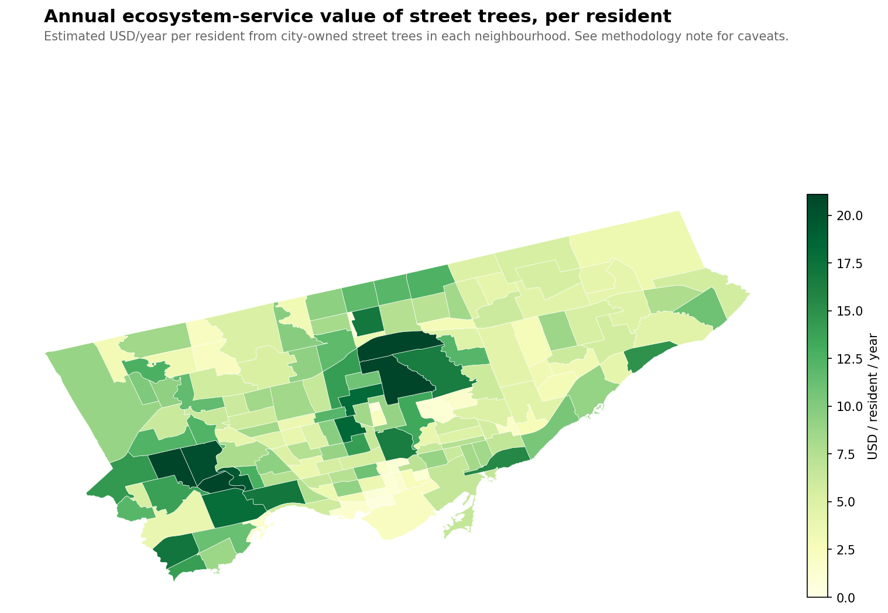
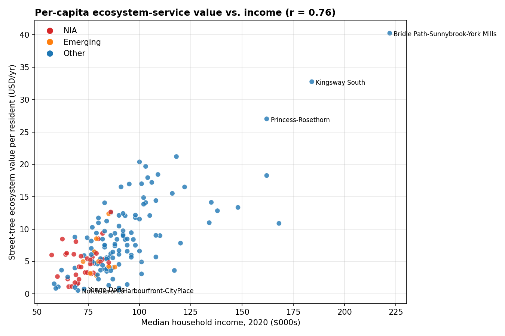
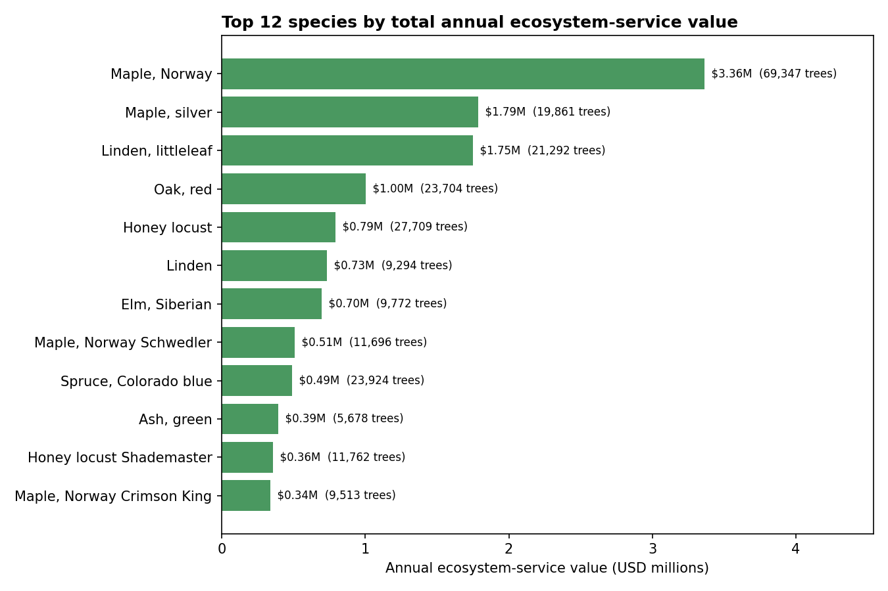

Toronto's street trees are worth $20 million a year — but not to everyone equally
A mature street tree does a lot of work you never see. It sequesters carbon. It drops rainfall before it reaches the storm drain and the lake. It filters a measurable fraction of airborne pollutants out of the lungs that live nearby. It shades west-facing walls and lowers air-conditioning loads in summer. The urban-forestry community has spent three decades putting dollar values on each of these functions, through the U.S. Forest Service's i-Tree suite of tools.
If you apply those valuation curves to every one of Toronto's 686,000 street trees (the ones with diameter data), summed across the city, the annual ecosystem-service value of what the city has growing between your sidewalk and the curb comes to about $20 million. Roughly $29 per tree per year, on average. Which doesn't sound like much — but there are a lot of trees.
$20M
Annual value, citywide
686k
Trees with DBH data
$29
Mean per tree / year
$0.50 – $40
Per-resident range (nbhd)
The distribution across the city, though, is as uneven as every other part of Toronto's canopy story — actually more uneven.

An 80× gap between residents
The rich neighbourhood / poor neighbourhood story that shows up in tree density, canopy cover, and tree-count-per-capita also shows up here — but amplified. Because ecosystem-service value scales super-linearly with tree size, and size scales with age, wealthy older neighbourhoods with mature canopy deliver much more service per resident than younger or sparser ones.
Most value / resident
USD/yr
Least value / resident
USD/yr
Bridle Path-Sunnybrook-York Mills
$40.30
North Toronto
$0.50
Kingsway South
$32.80
Harbourfront-CityPlace
$0.60
Princess-Rosethorn
$27.00
Yonge-Doris
$0.80
St. Andrew-Windfields
$21.20
North St. James Town
$0.80
Edenbridge-Humber Valley
$20.40
Wellington Place
$0.90
Lambton Baby Point
$19.70
Yonge-Bay Corridor
$1.00
Forest Hill South
$18.40
Church-Wellesley
$1.10
Lawrence Park South
$18.30
Regent Park
$1.10
A resident of Bridle Path gets about 80× more street-tree ecosystem service per year than a resident of North Toronto. Forty bucks to fifty cents. This isn't about the trees working harder in wealthy neighbourhoods — a tree is a tree — it's about how many of them exist, how big they are, and how many people each one has to "serve."

The correlation is r = 0.76 — the strongest income/tree relationship we've seen in any metric so far.
The previous equity posts looked at trees-per-capita (r = 0.67) and total canopy % (r = 0.50). Dollar value per capita lands higher than both because it compounds: wealthy neighbourhoods have more trees and older/larger trees and fewer people to divide them among.
By classification bucket:
Not-NIA / not-Emerging: average $8.97 per resident per year
Emerging: average $5.60
Neighbourhood Improvement Areas: average $4.90
NIA residents get roughly 55% of the ecosystem-service dollars non-NIA residents do, each year. Scale that across a lifetime and a household, and the gap is substantial.
The quote that keeps coming back: "Maps of trees are maps of race and wealth."(Carly Ziter, via a CBC/Radio-Canada data analysis of 17 Canadian cities, 2022.) Every way we've measured the canopy has ended up corroborating that sentence — with different numbers, sometimes bigger, sometimes smaller. Valuing it in dollars produces the biggest gap yet.
Which species do the most work

The Norway maple tops this chart for the same reason it tops every other chart on this site: there are 69,000 of it. Its average contribution per tree is $48/year — slightly above the city-wide mean, because many Norway maples are 40–60 years old and have reached substantial size. The city no longer plants them, but as long as they're standing, they are collectively doing three-and-a-half million dollars of environmental work every year.
Silver maples and littleleaf lindens come next. Silver maple is particularly productive per tree ($90/yr average) because it grows fast: a 30-year-old silver maple is often bigger than a 30-year-old sugar maple, and the ecosystem-service formulas reward trunk size.
Red oak (fifth, $1.0M total from 23,700 trees) is an interesting case: it contributes less per tree on average than Norway maple ($42 vs. $48) despite being a generally larger-growing species, because Toronto's red oaks skew younger — there's been active oak planting in the last 20 years. In 40 more years, red oak might top this chart.
Methodology, and what this number isn't
The dollar estimate is built on a transparent per-tree model: for each tree, annual value ≈ k × DBH1.5, where k depends on the species group (large broadleaf, medium broadleaf, small broadleaf, conifer, other). The coefficients are calibrated against published i-Tree Streets results for US Midwest/Northeast community tree guides (McPherson et al.), where a 50-cm medium broadleaf produces on the order of $60/year in utility benefits. Small-crown species like crabapples get a much lower coefficient; oaks and lindens get a higher one. The total across Toronto comes out to ~$20M/year, in the same ballpark as the city's own 2018 i-Tree Eco study for the street-tree subset of the full urban forest.
Caveats worth stating up front:
This is a back-of-envelope estimate, not an i-Tree Eco replacement. The city's own studies use species-specific growth curves, pollutant-concentration grids, building footprints for energy calculations, and local climate data. Mine is a crude five-parameter model. Expect absolute numbers accurate to within a factor of ~2; expect relative comparisons between neighbourhoods and species to be considerably more robust.
It's "utility value" only — CO₂ + stormwater + air quality + energy savings. It excludes the big, contentious category of property-value effects, which urban forestry studies sometimes quote as doubling the total but where attribution gets squishy.
Street trees only. Toronto's full urban forest (private yards, parks, ravines, institutional grounds) is roughly 10–15× this tree count. The city's i-Tree Eco study estimates the full-forest total at roughly $80 million a year. Street trees are a slice.
Carbon value used is the utility-discounted one (typically ~$50/tonne CO₂ in i-Tree defaults). At the current Canadian federal carbon price (~$80/t in 2026) or the social cost of carbon (~$230/t in the latest IMF work), the carbon component alone would be 1.5–5× higher, which would push the total meaningfully past $20M.
The more uncertain the number, though, the more the comparison survives. The 80× gap between Bridle Path and North Toronto doesn't care what carbon is worth. It's a ratio. And the ratio holds regardless of calibration.
What this is really measuring
A skeptical reading of everything above is: "of course the rich neighbourhood with the ravines and the big backyards and the old sycamores produces more ecosystem services per resident than the condo core. The condo core has fewer trees and more people. You didn't need a formula to tell you that."
Which is fair. But the translation into dollars matters because dollars are how the city's own Strategic Forest Management Plan justifies tree-planting spending. If a $200 street-tree plant job produces $29/year of service over a 40-year life, that's a ~$1,000 return. The case for more planting is strong. The case for where more planting happens is, specifically, at the bottom of the per-capita chart. Half of the NIA neighbourhoods on the low end of that chart aren't short of land for trees (look at the boulevards of Flemingdon Park or Thorncliffe Park on a satellite photo — plenty of mowed grass that could hold a tree). They're short of planting and maintenance budget, and the case for that budget is, in dollar terms, measurable.
Check the value of the tree on your block.
Search any address — tree card shows the DBH we use to compute the annual service value.